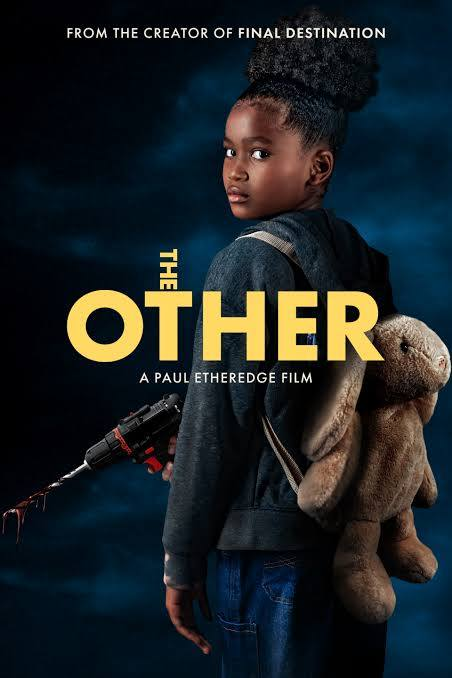

.jpg)
Good Fortune (2025)
Marketed as a comedy, but it plays more like a modern drama about stress, money, and feeling unseen. The jokes didn’t land for me, but the message did — especially through Keanu Reeves’ Gabriel.
Read full review →
Marketed as a comedy, but it plays more like a modern drama about stress, money, and feeling unseen. The jokes didn’t land for me, but the message did — especially through Keanu Reeves’ Gabriel.
Read full review →.jpg)
Wicked surprised me more than I expected. It’s too damn long and leans hard on CGI and drama, but buried inside all of that is a genuinely entertaining story with strong performances, catchy music, and a duo that works better than it has any right to.
Read full review →.jpg)
James Gunn skips the origin and drops us into an already-established Superman. The visuals pop, the source material influence is strong, and Lex is a real villain — even if the comedy sometimes undercuts the emotional weight.
Read full review →
A Godzilla movie that leans political and tactical instead of nonstop destruction. Strong themes and tension, even if the debates drag and the CGI reliance holds it back.
Read full review →.jpg)
A fast, bloody ride with some impressive camera ambition—held back by rushed pacing, harsh color, and sound choices that pull you out at the worst times.
Read full review →
A mute orphan girl is adopted into a picture-perfect home, and almost immediately the place starts to decay — food rots, mold spreads, and the family’s sense of safety slips fast. The strongest ideas are in the visuals and symbolism, even if the pacing can’t always hold the tension.
Read full review →